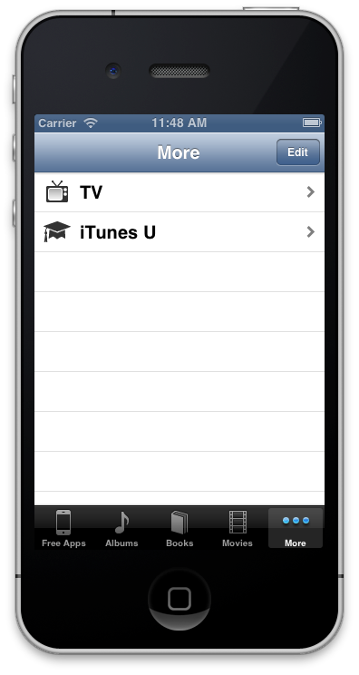
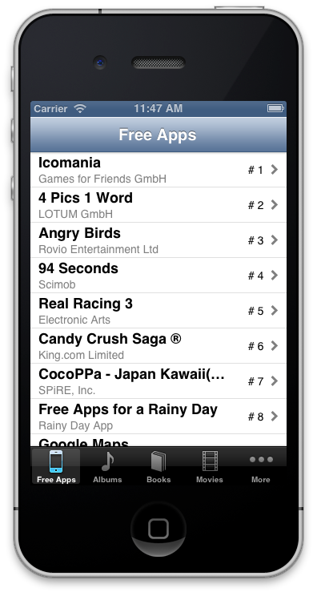
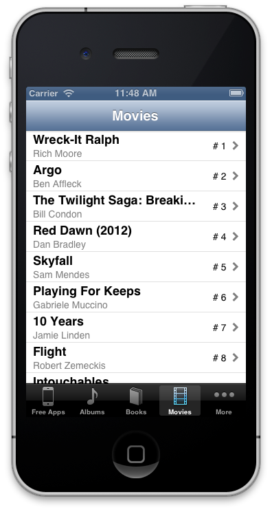
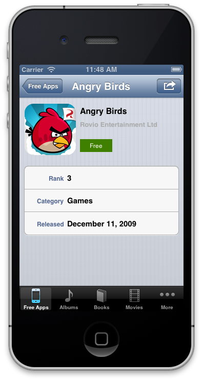
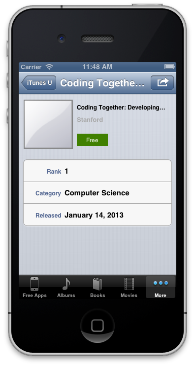
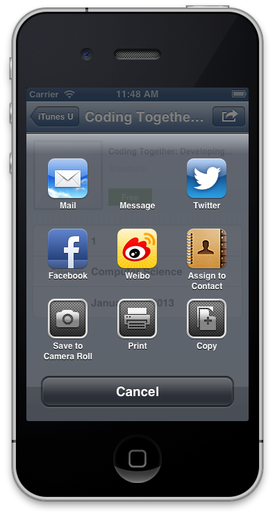
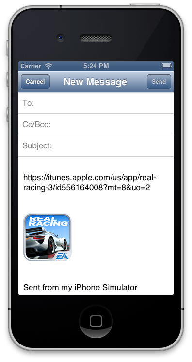
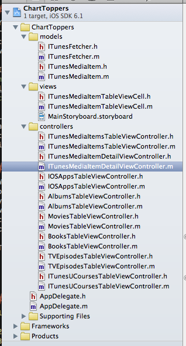

Friday, March 29, 2013 by 11:59pm
UINavigationControllerUITableViewControllerUITableViewDataSource and UITableViewDelegateIn this assignment, you will build an iPhone application that will give a list and details about the media items that are at the top of the iTunes charts in a given category. The application will bring the user to the iTunes store if he is interested in purchasing the item. In addition, the user can share the item with a friend via Email, Messages, Twitter, Facebook, etc.
The data presented in this application will always be current as it will be pulled from a remote web service provided by Apple.
A video demo of a working app can be found here:
Some things to note in the video:
You will pull all of your data from a URL that is generated from the following location:
You can choose any charts you would like, but you must have at least 6 charts, and span at least 6 different media types. You are welcome to have more.
When using the RSS generator tool, you will notice that the URLs end in /xml. You must change
that ending to /json.
You will have a minimum of 50 items per chart.
In this assignment, we will be reading the data from the remote service synchronously,
which means that our application will block (be non-responsive) while the data is being
fetched. The easiest way to do this is to use the NSData initializer initWithContentsOfURL:.
An example reading data from a remote location is as follows:
NSURL *url = [[NSURL alloc] initWithString:@"http://www.apple.com"];
NSData *rawContents = [[NSData alloc] initWithContentsOfURL:url];
You will be receiving data from the Apple RSS feed over HTTP in JSON format. JSON is simply a structured way to represent data. A good overview is provided on Wikipedia. In essence, you can think of JSON just like our plist file from the previous project. The intent is the same, but the format is different. There will be arrays, inside of dictionaries, inside of arrays, etc.
In order to parse JSON into native Objective-C objects, we will be using the
NSJSONSerialization Class. In particular, we will be interested in the JSONObjectWithData:options:error:
class method.
Assuming we have an NSData object which represents JSON data, and that we know
that the structure of the data has a dictionary as the root element, we could
parse the JSON data as follows:
NSError *error;
NSData *rawJSON = ...;
NSDictionary *parsedJSON = [NSJSONSerialization JSONObjectWithData:rawJSON
options:0
error:&error];
if (error) {
NSLog(@"JSON Parsing Error: %@", error);
}
The error handling above is very minimal, but it demonstrates how you can use the error object.
It is good practice when working with JSON data to parse the data into objects that
make sense in your application domain. The alternative is to pass around NSDictionarys
of object attributes which can be a bit cumbersome.
For this assignment, you are required to parse the JSON data into an array of ITunesMediaItems.
An ITunesMediaItem is just a simple class that knows how to set its properties based on an
NSDictionary of values. My ITunesMediaItem header file is as follows:
#import <Foundation/Foundation.h>
@interface ITunesMediaItem : NSObject
@property (nonatomic, readonly) NSString *title;
@property (nonatomic, readonly) NSString *category;
@property (nonatomic, readonly) NSString *artist;
@property (nonatomic, readonly) NSString *releaseDate;
@property (nonatomic, readonly) NSString *price;
@property (nonatomic, readonly) NSURL *artworkURL;
@property (nonatomic, readonly) UIImage *artworkImage;
@property (nonatomic, readonly) NSURL *storeURL;
@property (nonatomic, readonly) int rank;
- (id)initWithJSONAttributes:(NSDictionary *)jsonAttributes
rank:(int)rank;
@end
At a minimum, you must include the above fields. I encourage you to access additional data in your model and present it to the user.
The idea of this model is that the initializer will read the NSDictionary and pull out the
pieces of data that it is interested in. For example, the artist can be accessed with
jsonAttributes[@"im:artist"][@"label"].
One of the wonderful things about the data that we are using is that all of the different
media types have the same JSON representation. This means that we only need one class to
represent the ITunesMediaItems, not one for each type.
It is good practice to organize the fetching of the JSON data into a single class
that understands how to deliver the fetched results. I created a class called
ITunesFetcher which does exactly this. The header file for my class looks like this:
#import <Foundation/Foundation.h>
#import "ITunesMediaItem.h"
@interface ITunesFetcher : NSObject
+ (NSArray *)topFreeApps;
+ (NSArray *)topAlbums;
+ (NSArray *)topPaidBooks;
+ (NSArray *)topMovies;
+ (NSArray *)topTVEpisodes;
+ (NSArray *)topITunesUCourses;
@end
The responsibility of this class is to fetch the RSS feed for the given chart, parse
the JSON data, create and return an array of ITunesMediaItem objects based on the parsed
data.
You will have a minimum of 6 different tabs in your application. You will notice that
after you have 5 tabs, the UITabBarController automatically gives you a “more” tab.

Each tab will have a UINavigationController. At the first level of the navigation, a
UITableViewController will display a list of the items in the chart, ordered with the
most popular first. The UITableViewCell in this must be custom. At a minimum, it
will display the title, artist and rank of the ITunesMediaItem.
Some example top level lists are as follows:


When the user taps on a row, the details for the selected media item will be presented.
This controller will also be a subclass of UITableViewController but it will display
a static number of rows as opposed to the dynamic nature of the list view.
Some examples of the detail views are as follows:


You will notice in the second example that the artwork presented for the iTunesU course is rather boring. This is a “default” image that I provided when the item returned from Apple does not have artwork associated with it. You must be prepared for data that does not have an image, and similarly present a default image instead.
In addition, be sure that your artwork image is not distorted when displayed.
You must provide a button when presenting the details of an iTunes media item that allows the user to share the item. Tapping the button will show an array of services that the user can use to share the item.
For example, the list of sharing options may look like this:

At a minimum, you must share the artwork for the item, and the store URL. As an example, if the “Mail” method were chosen, the user would see the following:

The good news, is that this sounds much more difficult than it is. In order to share
information, and present the dialog, you must create a UIActivityViewController and
present it on the screen. You will need to read about the
UIActivityViewController in order to determine how to create one. Once you create one
you can present it on the screen as follows:
UIActivityViewController *activityVC = ...;
[self presentViewController:activityVC
animated:YES
completion:nil];
The rest of the sharing is handled for you by iOS.
You must also provide a button in your details of an iTunes media item that will redirect the user to the store so that he can purchase the item he is viewing. In the example application, the green button with the price on it is the button with this behavior.
In order to do this, you will need to investigate the openURL: method in the UIApplication class.
Launching the store will take the user out of your application into a different application. For most media items, this might only work on the device. You will know that you are on the right track though if Safari is launched in the simulator. Also, in my testing, I found that a book media item shows a web page in Safari on the simulator.
While this project may seem complex, the reality is that there are a lot of files with only a couple of lines in them. The work is really in getting one chart working. Once you have one chart working successfully, the others will be able to reuse most of the work done for the first one. Be sure to use good object-oriented programming skills, and try not to repeat yourself unnecessarily. If there is common functionality between charts, put it in a base class, and extend it.
The files in my project are as follows:

In addition, I found the tab bar icons at http://www.glyphish.com and my default artwork image at http://www.iconfinder.com. IconFinder is a nice resource as it allows you to search for icons with a license filter applied.
ITunesMediaItem model which will represent a single media item.ITunesFetcher class which will know how to fetch the chart
data and create an array of ITunesMediaItems.UINavigationController to navigate the chart.UITableViewController with dynamic
table rows that are of a custom class.UITableViewContoller with static
table rows.You are welcomed and encouraged to add additional features to your program. I will award extra credit for well implemented feature enhancements. If you complete any of these suggested enhancements, or others, please make it obvious in your code that I should check for them. Some ideas of ways to earn extra credit are as follows:
UICollectionViewController.
(NOTE: This is in addition to the UITableViewController that is required.)UIAlertView if there is no network connection and the
application can not be run.By the due date/time you are expected to have committed your working Xcode
project to your private github repository for CSCI 567 at the location
/project_3/ChartToppers.